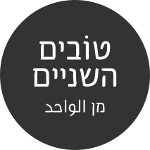

אברהם إبراهيم
גופן עברי ערבי خط عبري عربي
יחסי הכוחות במרחב הישראלי משתקפים בכל אות ואות. שילוט הוא אולי הבעיה
علاقات القوَّة في الحيّز الإسرائيلي تنعكس في كل حرف وحرف. تكون اللافتات مشكلة
הקטנה, ואולי גם הקטנונית ביותר במסכת היחסים בין החברה היהודית לערבית,
صغيرة, ربما الأكثر تافهةً في معركة العلاقات بين المجتمعين اليهودي والعربي.
אך עם זאת, הוא עוד עדות לאי שוויון בין החברות באמצעים תמימים לכאורה:
مع ذلك, تشكل هذه لافتات شهادة إضافية لعدم المساواة بين المجتمعين, بوسائل ما
בסדר הייצוג של השפות, במידת הנראות, בגודל הכתב בשתי השפות ובסוג הפונט.
تبدو "بريئة": بأولويّة ترتيب اللغات، بدرجة مدي الرؤية، بحجم الحروف وبنوع الخط.
גם שלטים הם לא רק שלטים.
حتّى لافتات ليست هي لافتات فقط.
אסתר זנדברג استر زندبرغהארץ هآرتس, 21.05.2014
| مشهد מראה | سنافر דרדסים | هذا هو זהו זה | |
| שדה תעופה مطار | עבודה عمل | תנין تمساح | |
| عشر עשר | ثلاثون שלוֹשים | عهد תקופה | |
| חאליסי خاليصي | משל مثل | יער غابة |
אחת עגולה ואחת מרובעת
בגלל שבאופן יחסי זו לזו הערבית עגולה והעברית מרובעת - בתהליך העיצוב עיגלתי את העברית ויישרתי ו"ריבעתי" את הערבית.

אחת צומחת ואחת תלויה
האותיות העבריות בנויות כך שהן "תלויות מלמעלה" ובערבית הן "צומחות מלמטה". כדי "לקשור" אותם, התאמתי בין החלק העליון של העברית והתחתון של הערבית.
אחת שורות אחת בלאגן
כדי להתאים בין השפות, יצרתי גריד אחד משותף, בו העליות והירידות הארוכות של הערבית קוצרו על מנת לעזור ביצירת מבנה שורה אחת אחידה.
דקורציה באמצעות החסרה
חיתוכים בזויות קבועות עוזרים ליצור קשר ויזואלי בין שתי השפות.
|
ערבית היא שפה בענף הדרומי של השפות השמיוֹת המערביות בתוך קבוצת השפות השמיוֹת של משפחת השפות האפרוֹ-אסיאתיוֹת. ככזאת היא קרובה מאוד לעברית ולארמית, ששייכות לענף הצפוני של השפות השמיות המערביות. הערבית הספרותית ("אלפֻצחא"-الفصحى) משמשת בעיקר לכתיבה ולתקשורת בכל רחבי העולם הערבי, והיא בעלת תפקיד מפתח בחיי כל המוסלמים, שכן היא משמרת את שפת הקוראן, אשר נכתב בלהג הערבית של שבט קוּרייש. לצד הערבית הספרותית קיימת גם ערבית מדוברת ("אלעאמייה"-العامية), ולה ניבים (דיאלקטים) רבים, שמשמשים שפת אם לכ-422 מיליון בני אדם ברחבי אסיה ואפריקה (לדוגמה: ערבית לבנונית, מצרית, מרוקאית ופלסטינית). הערבית היא שפה רשמית (לאו דווקא יחידה) כמעט בכל מדינות המזרח התיכון (כולל את ישראל אך להוציא את איראן ואת טורקיה) ובכל מדינות צפון אפריקה. כמו כן היא אחת מהשפות הרשמיות של האו"ם. כשפת הקוראן היא נחשבת לשון הקודש של דת האסלאם. לפי דת זו אלוהים נתן את הקוראן לידי הנביא מוחמד במפורש בשפה הערבית. עם התפשטותה על פני מרחב גאוֹגרפי גדול התפתחו בה ניבים רבים אחרים, ואלה נבדלים משמעותית זה מזה ומהערבית הספרותית (שמבוססת על שפת הקוראן והשירה הערבית הקלאסית). כבר בתקופה קדומה, ייתכן שעוד לפני כיבושי האסלאם, ואולי זמן קצר לאחריהם, נוצר מצב של דיגלוסיה אצל דוברי הערבית, כיוון שהמשכילים הערביים, בעיקר המוסלמים שביניהם, הקפידו לכתוב בשפת הקוראן, וראו בניבים השונים עגה שאינה ראויה לעלות על הכתב. מצב זה קיים בעולם הערבי עד היום - אמצעי התקשורת הערביים משתמשים בצורה תקנית (סטנדרטית) של הערבית הספרותית, שפה הנלמדת במוסדות החינוך בכל רחבי העולם הערבי. שימוש בניבים מקומיים, בעיקר בערבית של קהיר (ערבית מצרית), לצורכי תקשורת בין-ערבית, נעשה נפוץ עם התפתחות התיאטרון והקולנוע. יש בערבית 7 זמנים: עבר, עתיד, עתיד מנצוב, עתיד מג'זום مَجْزُوم, ציווי, בינוני פועל ובינוני פעול. צורות הבינוני משמשות בדרך כלל כשמות עצם, אך ניתן להשתמש בהן כדי לבטא את ההווה. צורה מקובלת יותר לביטוי ההווה הוא השימוש ב"זמן ביניים". כלומר: שימוש בלשון עתיד לתיאור פעולה בהווה (כמו שימוש בלשון עתיד בעברית לתיאור העבר וההווה (לדוגמה: "וַיֵלֶךְ משֶׁה"), או העבר לתיאור העתיד) על מנת להבחין בין צורת העתיד להווה, ניתן להוסיף את התחילית س לפני הפועל המדגישות כי מדובר בעתיד. צורת העבר הבסיסית היא צורתו של הנסתר. לצורך יצירת הגופים מוסיפים לצורה זו את הסיומת המתאימה לגוף. גם בעתיד הצורה הבסיסית היא צורת הנסתר, ויצירת הגופים מתבצעת על ידי החלפת התחילית והוספה, במקרה הצורך, של סיומת. השימוש בעתיד המנצוב נעשה לאחר מיליות מסוימות כמו أَنْ, המתווספת לפעלים שבהם יש רצון, בקשה, תקווה וכד', אשר מצטרפת למילים להביע שלילה מוחלטת. בערבית קיימת צורת זוגי اَلْمُثَنَى הבאה לתאר שני פרטים. לעומת העברית, ששימרה חלקית את צורת הזוגי בשמות עצם מסוימים (למשל, "שעתיים", "אופניים"). בערבית כמו בעברית שם התואר עוקב אחר העצם אותו הוא מתאר ומתאים לו במין ובמספר. כמו כן בצורת הסמיכות הנסמך קודם לסומך בדומה לעברית. |
العبرية هي لغة سامية من مجموعة اللغات الشمالية الغربية من الفرع الكنعاني، تنتمي إلى مجموعة اللغات الأفريقية الاسيوية. حاليا تنتشر اللغة العبرية الحديثة كلغة حديث وأدب وتعاملات رسمية، ويتحدث بها أكثر من سبعة ملايين شخص موزعين في حدود إسرائيل والأراضي الفلسطينية. اللغة العبرية الحديثة منبثقة من اللغة العبرية الكلاسيكية التي لم تعد مستخدمة كلغة حديث أو كلغة تعاملات رسمية إنما تستخدم كلغة دينية يستعملها المتدينون اليهود في تعاملاتهم الدينية، وهي بدورها، كلاسيكية קלאסי، نشأت من محاولة إحياء للّغة العبرية القديمة التي ماتت في القرن الخامس قبل الميلاد. اللغة العبرية القديمة هي العبرية التي كتب فيها العهد القديم، وتشبه إلى حد كبير لغات قديمة أخرى مثل اللغة الفينيقية والعمونية والمؤابية ولهذا يعتبر علماء اللغات كل هذه اللغات الأخيرة لهجات للّغة الكنعانية. أخذت اللغة العبرية العديد من الأسماء، وهي: لغة كنعان כנען، وهو اسم وارد في التوراة، اليهودية كونها لغة مهمة في الديانة اليهودية، واللغة المقدسة بسبب نزول التوراة بها، لكن أشهر الأسماء لها هو اللغة العبرية حيث سميت بهذا الاسم نسبة إلى العبرانيين الذين حملوا اللغة من بعد الكنعانيين. تاريخ اللغة العبرية: بدأت مرحلة العبرية القديمة الخالصة في القرن العاشر قبل الميلاد تقريبا، فكانت اللغة العبرية هي اللغة الشائعة في المناطق الجبلية في فلسطين، وكانت عبرية هذا العصر تتسم بالنقاء والبعد عن أي تأثيرات أجنبية، ودون بها معظم أسفار العهد القديم والأعمال الأدبية الأخرى، وعدد من النقوش الأثرية على الصخور والأحجار والعملات. بعد أن أصبحت الارامية هي اللغة الرسمية في البلاد، وجه الزعماء الدينيون جهودهم نحو شرح وتفسير العهد القديم باللغة الارامية لكي يفهم اليهود أصول وطقوس الدين اليهودي، فكتبوا المشناه والجمارا ثم التلمود. وكانت لغة هذه الكتب مختلفة تماما في روحها وألفاظها وتراكيبها عن عبرية العهد القديم، فظهر فيها التأثر الشديد باللغة الارامية، كما احتوت أيضا على بعض الألفاظ من اللغات الأخرى. مع امتداد المناطق التي سيطر عليها العرب إلى فلسطين، تمتع اليهود ببعض الرفاهية الفكرية والتي أنتجت الكتاب المسورتيين מְסוֹרה والذين وضعوا أساس عملية التشكيل أو التنقيط נִיקוּד والذي استمر حتى اليوم كنظام التنقيط العبري الرسمي. عرف اليهود عصراً ذهبياً كثير الإنتاج الأدبي أثناء حياتهم في الأندلس العربية. يعرف اليهود تلك الفترة باسم "العصر الذهبي" תוֹר הַזָהָב وتعرف الإنتاجات الأدبية لهذا العصر العبري الوسيط'، وكانت هذه آخر العصور المزدهرة للغة العبرية والتي انتهت بسقوط الأندلس. اليوم، تعتبر العبرية اللغة الرسمية الأولى لدولة إسرائيل، وأصبحت تستخدم في شتى مجالات الحياة، مع أنها مختلفة عن العبرية التوراتية القديمة، (يقول تقرير نشرته صحيفة هآارتس الإسرائيلية بأن طلاب المدارس لا يفهمون عبرية التوراة). خليط من كلمات عبرية وعربية وأوروبية. دخلت على العبرية الحديثة الكثير من الكلمات التي يعود أصلها إلى الارامية، واليديشية، والإنجليزية، والعربية. |
קدעطזعا
בחמש קם صياد ויצא את ביתוֹ
יש לי סיכוי להנצל, אנא עארף
לחםהמילה בשר בערבית היא ״לחם״. ממש כמו הלחם הפרוס שיש בצרכנייה הקרובה. אז אם תגידו ״לחם״ בשוק בית לחם הם אשכרה יביאו לכם בשר. שיפודים, קבבים סטייקים... אז עוֹף או בקר? |
لحمكلمة خبز باللغة العبرية هي "لحم". مثل اللحم المفروم في يوجد عند اللحام. إذا تطلب "لحم" في السوق في تل أبيب سيعطوك الخبز. لفة، بيتا مع زعتر، أو رغيف الخبز؟ |
לחםהמילה בשר בערבית היא ״לחם״. ממש כמו הלחם הפרוס שיש בצרכנייה הקרובה. אז אם תגידו ״לחם״ בשוק בית לחם הם אשכרה יביאו לכם בשר. שיפודים, קבבים סטייקים... אז עוֹף או בקר? |
لحمكلمة خبز باللغة العبرية هي "لحم". مثل اللحم المفروم في يوجد عند اللحام. إذا تطلب "لحم" في السوق في تل أبيب سيعطوك الخبز. لفة، بيتا مع زعتر، أو رغيف الخبز؟ |
לחםהמילה בשר בערבית היא ״לחם״. ממש כמו הלחם הפרוס שיש בצרכנייה הקרובה. אז אם תגידו ״לחם״ בשוק בית לחם הם אשכרה יביאו לכם בשר. שיפודים, קבבים סטייקים... אז עוֹף או בקר? |
لحمكلمة خبز باللغة العبرية هي "لحم". مثل اللحم المفروم في يوجد عند اللحام. إذا تطلب "لحم" في السوق في تل أبيب سيعطوك الخبز. لفة، بيتا مع زعتر، أو رغيف الخبز؟ |
לחםהמילה בשר בערבית היא ״לחם״. ממש כמו הלחם הפרוס שיש בצרכנייה הקרובה. אז אם תגידו ״לחם״ בשוק בית לחם הם אשכרה יביאו לכם בשר. שיפודים, קבבים סטייקים... אז עוֹף או בקר? |
لحمكلمة خبز باللغة العبرية هي "لحم". مثل اللحم المفروم في يوجد عند اللحام. إذا تطلب "لحم" في السوق في تل أبيب سيعطوك الخبز. لفة، بيتا مع زعتر، أو رغيف الخبز؟ |
לחםהמילה בשר בערבית היא ״לחם״. ממש כמו הלחם הפרוס שיש בצרכנייה הקרובה. אז אם תגידו ״לחם״ בשוק בית לחם הם אשכרה יביאו לכם בשר. שיפודים, קבבים סטייקים... אז עוֹף או בקר? |
لحمكلمة خبز باللغة العبرية هي "لحم". مثل اللحم المفروم في يوجد عند اللحام. إذا تطلب "لحم" في السوق في تل أبيب سيعطوك الخبز. لفة، بيتا مع زعتر، أو رغيف الخبز؟ |
לחםהמילה בשר בערבית היא ״לחם״. ממש כמו הלחם הפרוס שיש בצרכנייה הקרובה. אז אם תגידו ״לחם״ בשוק בית לחם הם אשכרה יביאו לכם בשר. שיפודים, קבבים סטייקים... אז עוֹף או בקר? |
لحمكلمة خبز باللغة العبرية هي "لحم". مثل اللحم المفروم في يوجد عند اللحام. إذا تطلب "لحم" في السوق في تل أبيب سيعطوك الخبز. لفة، بيتا مع زعتر، أو رغيف الخبز؟ |
רוצה את הפונט?
הוא עדיין לא מרגיש לי מוכן ומספיק בשל כדי שאוכל להפיץ אותו. יש עליו עוד עבודה ואני רוצה לעצב גם מספרים, סימנים ומשקל נוסף. בינתיים תעודדו אותי אם תשאירו לי את המייל שלכם כדי שאדע שיש מי שמחכה לפונט, ואני מבטיח לעדכן כשיש התפתחויות...דניאל